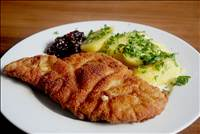

Rezepte
Bolognese Sauce

Zutaten:
1 kg Rinderhackfleisch
3 Knoblauchzehe(n), in Scheiben geschnittener
3 Möhre(n)
3 Stange/n Staudensellerie
2 große Zwiebel(n)
1 ½ Dose/n Tomate(n), à 400 g Inhalt
600 g Spaghetti
125 g Butter
500 ml Milch
3 Peperoncini, zerstampfte
Meersalz
Pfeffer, schwarzer
n. B. Hühnerbrühe, instant
wenig Olivenöl
1 Schuss WeißweinZubereitung:
Das wichtigste an einer Bolognese ist das sogenannte "Soffritto":
Dazu einen ordentlichen Klotz Butter (ca. 125 g) und ein wenig Olivenöl (damit die Butter nicht verbrennt) in eine Pfanne geben. Zwiebeln, Möhren und Staudensellerie putzen bzw. schälen, ganz fein hacken und auf möglichst niedriger Flamme langsam (mind. 30 Minuten) darin garen, bis das Gemüse schön glasig und weich geworden ist.
Wichtig ist, dass das Gemüse nicht brät, sondern wirklich nur gart - also nicht zu heiß werden lassen!
Derweil das Rinderhackfleisch so lange in einer weiteren Pfanne scharf anbraten, bis es anfängt zu karamellisieren. Anschließend mit einem Schuss Weißwein ablöschen, so dass sich alles Angebackene vom Boden lösen lässt. Wichtig: Jetzt je nach Saucenmenge ca.¼ bis ½ Liter Milch hinzugeben, die sich um das Hackfleisch legt und diesem einen ganz milden Geschmack verleiht.
Sobald das Fleisch mit Weißwein und Milch aufkocht, die Dosentomaten hinzugeben (die erforderlichen frischen Tomaten sind bei uns leider nicht erhältlich). Am besten geeignet sind hierfür die San Marzano Eiertomaten aus der Gegend von Neapel. Diese haben einen ganz eigenen süßlichen Geschmack, der der Sauce Bolognese und auch einer ordentlichen Sauce Napoli sehr zuträglich ist.
Sobald dies alles wieder aufgekocht ist, den "Soffritto" hinzugeben. Der in Scheiben geschnittene Knoblauch und die zerstampften Peperoncini können jetzt auch mit hinein. Das Ganze kann dann gar nicht lange genug köcheln. Ideal wären ca. 5 Stunden.
Dann abkühlen lassen und dann noch einmal 1 Stunde langsam aufwärmen (muss aber nicht, schmeckt auch so). Mindestens 2 Stunden sollte es aber köcheln.
Tipp: Man kann auch noch ein wenig frisch gehackte Möhre und Staudensellerie nachschieben, um ein wenig mehr Biss an das Gemüse zu kriegen. Mit Meersalz, frisch gemahlenem schwarzen Pfeffer und der Hühnerbrühe abschmecken.
In der Zwischenzeit die Nudeln nach Packungsanweisung bissfest kochen, anschließend abgießen.
Die Spaghetti auf Tellern anrichten und die Bolognese darüber verteilen. Heiß servieren.
Arbeitszeit: ca. 30 Min.
Koch-/Backzeit: ca. 5 Std.Filetsteak mit Cognac-Pfeffer-Soße

Zutaten:
500 g Bohnen, TK
Salz
Pfeffer, schwarz
4 Rinderfilet(s), Steaks à 150 g
200 ml Rinderfond, aus dem Glas
8 Scheibe/n Bacon, dünn geschnitten
1 EL Pfeffer, grün, eingelegt
CognacZubereitung:
Bohnen garen. Steaks im Öl braten. Mit Salz und Pfeffer würzen. Warm stellen. Bratensatz mit Fond und Cognac lösen. Bei starker Hitze etwas einkochen. Bohnen mit Speck umwickeln. In 1 TL Öl ca. 13 Min. braten. Soße etwas binden, grünen Pfeffer einrühren. Alles anrichten.
Arbeitszeit: ca. 30 Min.Gebratenes Lachsfilet auf Zucchininudeln
Zutaten:
4 Zucchini
300 g Lachsfilet(s) ohne Haut
Salz und Pfeffer
1 Stängel Thymian oder sonstige Kräuter, je nach Geschmack
1 EL Frischkäse, magerer, 0,1 %Zubereitung:
Die Zucchini entkernen und entweder mit oder ohne Schale der Länge nach in dünne, spaghettiähnliche Streifen hobeln.
Den Lachs spülen, trockentupfen, mit Salz und Pfeffer einreiben und anbraten. Ca. 4 - 5 Minuten auf jeder Seite, wobei aufgrund des Fehlens von Fett die Gefahr des Anbrennens besteht. Eventuell 1 Löffel Wasser und das Verwenden eines Deckels hilft, dies zu vermeiden. Nach dem Umdrehen die Kräuter auf den Fisch geben, wieder 4 Minuten braten. Zum Schluss vorsichtig ohne Flüssigkeit braten, damit er Farbe annimmt. Der Fisch sollte noch etwas nachgeben, wenn man ihn mit der Gabel drückt, dann ist er innen noch saftig. Den Fisch aus der Pfanne nehmen auf einem warmen Teller mit Alufolie abdecken und ziehen lassen, bis die Zucchininudeln fertig sind.
Die Bratenreste mit 1 bis 2 EL Wasser aufkochen. Die Flüssigkeit gut würzen, die Zucchininudeln dazugeben und 4 Minuten dünsten lassen. Wem das zu fischig oder zu dunkel ist, kann das natürlich auch mit frischem Wasser machen. Mit etwas magerem Frischkäse binden und abschmecken.
Reichlich Zucchininudeln auf den Tellern anrichten und den Lachs darauf geben.
Arbeitszeit: ca. 15 Min.
Koch-/Backzeit: ca. 15 Min.
Ruhezeit: ca. 5 Min.Grießbrei
Zutaten:
800 ml Milch
80 g Weichweizengrieß
2 EL Zucker
1 Pck. Vanillezucker
1 Prise(n) Salz
1 Ei(er)
25 g ButterZubereitung:
Die Milch mit Zucker, Vanillezucker und einer Prise Salz in einem weiten Topf zum Kochen bringen. Den Weizengrieß unter Rühren mit einem Schneebesen einrieseln lassen und nochmals aufkochen lassen. Dann den Topf vom Herd nehmen und den Grieß zugedeckt 5 Minuten ziehen lassen.
In der Zwischenzeit das Eigelb vom Eiweiß trennen. Das Eiweiß zu steifem Schnee schlagen. Das Eigelb in den Grießbrei rühren. Die Butter ebenfalls in den Grießbrei geben und so lange rühren, bis die Butter geschmolzen ist. Zum Schluss den Eischnee vorsichtig unter den fertigen Grießbrei heben.
Dazu schmeckt Kompott nach Wahl, Zimt und Zucker oder braune Butter.
Arbeitszeit: ca. 15 Min.
Koch-/Backzeit: ca. 10 Min.Indisches Butter Chicken aus dem Ofen

Zutaten:
1 TL Paprikapulver
1 EL Limonensaft oder Zitronensaft
2 TL Salz
1 Becher Joghurt (150 g)
2 Stück(e) Ingwer, jeweils daumengroß
2 Zehe/n Knoblauch
3 TL Cayennepfeffer
1 EL Garam masala
500 g Hähnchenbrust
500 g Tomate(n), passiert
4 EL Butter
1 TL Zimt
1 EL Honig
150 ml Sahne
1 Zwiebel(n)Zubereitung:
Die Hähnchenbrust in Stücke schneiden. Aus 1 TL Paprikapulver, 1 EL Limonen- bzw. Zitronensaft, 1 TL Salz, 1 Becher Joghurt, 1 TL Cayennepfeffer, 1 EL Garam Masala Pulver, 1 Stück Ingwer und 1 Knoblauchzehe eine Marinade herstellen. Das Fleisch mit der Marinade mischen.
Mindestens eine Stunde einziehen lassen. Besser ist es, das Fleisch bereits am Vortag zu marinieren und über Nacht in den Kühlschrank zu stellen.
Den Ofen auf 200 °C vorheizen dann das Fleisch in einer Auflaufform für 25 Minuten garen.
Die Zwiebel klein hacken und in 2 EL Butter glasig anschwitzen. Die passierten Tomaten, den Zimt, 1 TL Salz, 2 TL Cayennepfeffer, 1 Stück Ingwer und 1 Knoblauchzehe hinzugeben. Alles 20 Minuten mit Deckel und bei niedriger Temperatur köcheln lassen. Gelegentlich umrühren. Nun die restlichen 2 EL Butter, den Honig und die Sahne hinzufügen, weitere 3 Minuten köcheln. Das Fleisch aus der Marinade nehmen, in die Soße geben, kurz umrühren und 2 Minuten mitköcheln lassen.
Dazu passt Reis oder Naan.
Wer gerne Koriandergrün mag, der kann ganz am Ende noch ein paar frisch gehackte Blätter hinzufügen.
Arbeitszeit: ca. 30 Min.
Koch-/Backzeit: ca. 30 Min.
Ruhezeit: ca. 1 Std.Lasagne al forno

Zutaten:
1 Schuss Olivenöl
2 m.-große Zwiebel(n)
2 m.-große Karotte(n)
200 g Sellerie
1 Zehe/n Knoblauch
1 EL Tomatenmark
500 g Hackfleisch, gemischtes
½ Tasse Rotwein
½ Liter Fleischbrühe
1 Dose Tomate(n), gehackte
etwas Salz
etwas Pfeffer
1 TL, gehäuft Oregano
etwas Cayennepfeffer
etwas Zimt
1 EL Zucker, braun
2 Zweig/e Rosmarin
1 TL, gehäuft Kakaopulver
30 g Butter
25 g Mehl
300 ml Milch
½ TL Muskat, gerieben
12 Lasagneplatte(n)
etwas Parmesan, oder MozzarellaZubereitung:
Vorbereitung:
Zwiebeln, Karotten und Sellerie schälen, in kleine Würfel schneiden und in eine Schüssel geben. Den Knoblauch ebenfalls schälen und fein hacken.
Zubereitung:
In einem breiten Topf das Olivenöl erhitzen. Darin Zwiebeln, Karotten und Sellerie leicht andünsten. Zuletzt den Knoblauch und das Tomatenmark hinzugeben und alles leicht anbraten. Den kompletten Inhalt des Topfes zurück in die Schüssel geben.
Erneut etwas Olivenöl im Topf heiß werden lassen, das Hackfleisch darin verteilen und scharf anbraten. Anschließend umrühren und auch von der anderen Seite anbraten. Inzwischen einen halben Liter Wasser im Wasserkocher erhitzen. Einen Brühwürfel in einem zweiten, kleineren Topf zerbröseln und mit dem heißen Wasser aufgießen und verrühren.
Wenn das Hackfleisch braun angebraten ist, das Gemüse zurück in den Topf geben. Rotwein, Brühe und Tomaten zufügen. Mit Pfeffer, Oregano, Cayennepfeffer, Zimt und braunem Zucker würzen. Die Rosmarinzweige in die Soße geben und alles vorsichtig verrühren. Zugedeckt mindestens 20-30 Minuten köcheln lassen und gelegentlich umrühren. Zum Schluss den Kakao zufügen und mit Salz oder Brühepulver abschmecken. Die Rosmarinstängel aus der Soße nehmen. Umrühren und die Ofenplatte ausschalten.
Für die Béchamelsauce die Butter in einem kleinen Topf zerlassen. Salzen, pfeffern und frisch geriebene Muskatnuss dazugeben. Mit dem Mehl bestäuben und mit einem Schneebesen verrühren. Die Milch langsam unter Rühren zugießen und kurz aufkochen. Wenn die Soße zu dick wird, mehr Milch hinzufügen.
Den Ofen auf 200 °C Umluft aufheizen.
In eine ofenfeste, breite Auflaufform etwas von der Hackfleischsoße geben und verteilen, sodass der Boden bedeckt ist. Mit Lasagneplatten abdecken und abwechselnd schichten. Auf jede Lage etwas Béchamelsauce gießen, den Großteil oben auf die letzte Schicht Lasagneplatte mit Hackfleischsoße geben. Mit Parmesan oder Mozzarellawürfeln bestreuen und mit etwas Pfeffer aus der Mühle abschließen.
Die Lasagne 30-40 Minuten im Ofen backen. Je nach Belieben die letzten 5 Minuten den Grill anschalten, dann wird sie oben brauner und knusprig.
Frisch und heiß servieren!
Arbeitszeit: ca. 25 Min.
Koch-/Backzeit: ca. 1 Std. 30 Min.Milchreis - Grundrezept

Zutaten:
8 Tasse/n Milch, zimmerwarm (entspricht ca. 1 Liter)
2 Tasse/n Milchreis (entspricht ca. 250 Gramm)
4 EL Zucker
1 EL Butter
1 Vanilleschote(n) oder 1 Pck.Vanillezucker
Zucker und Zimt oder Apfelmus, Rote Grütze oder frische FrüchteZubereitung:
In einem großen(!) Topf die Butter schmelzen, anschließend den Rundkornreis kurz in der Butter anschwitzen. Nun die zimmerwarme(!) Vollmilch sowie 4 EL Zucker hinzugeben. Wenn vorhanden, das Mark einer Vanilleschote sowie die aufgeschlitzte Schote ebenfalls in den Topf geben; andernfalls Vanillezucker hinzufügen. Alles unter vorsichtigem Rühren mit dem Holzkochlöffel einmal aufkochen lassen, dabei aufpassen, dass sich nichts am Topfboden ansetzt.
Nun den Topf auf eine Herdplatte stellen, die auf kleinster Stufe heizt. Den Milchreis im geschlossenen Topf exakt 30 Minuten ziehen lassen. Nach der Hälfte der Zeit das einmal umrühren.
Nach 30 Minuten ist der Reis servierfertig; er kann warm und kalt gegessen werden.
Nach Geschmack Zimt und Zucker mischen und über den Milchreis geben oder Apfelmus, Rote Grütze, frisches Obst, etc. dazu reichen.
Arbeitszeit: ca. 10 Min.Putenoberkeule mit Schalotten, Honig und Rosmarin

Zutaten:
1 ½ kg Putenkeule(n) (Oberkeule)
350 g Schalotte(n)
1 dünne Karotte(n)
250 ml Geflügelfond oder Hühnerbrühe
250 ml Weißwein, trockenen fruchtigen
1 Spritzer Sojasauce
1 ½ EL Honig, dunkler
n. B. Salz
n. B. Pfeffer
n. B. Cayennepfeffer
1 Zweig/e Rosmarin, frischen
etwas ButterschmalzZubereitung:
Die Putenkeule waschen und mit Küchenpapier trocken tupfen. Mit Salz, Pfeffer und nach Geschmack mit Cayennepfeffer einreiben.
Die Schalotten häuten und halbieren. Karotte schälen und in Rauten schneiden. Weißwein in einem Topf geben, köcheln und auf etwa 150 ml reduzieren lassen.
Butterschmalz im Bräter erhitzen. Die Putenkeule von beiden Seiten etwa 2 min. kräftig anbraten und dann herausnehmen. Im heißen Bratfett die Schalotten und Karotte unter Wenden etwas schmoren lassen. Mit dem Weißwein ablöschen, umrühren und danach den Geflügelfond, bzw. Hühnerbrühe angießen. Einen Spritzer Sojasoße und den Honig zur Soße geben.
Die Putenkeule wieder zurück in den Bräter geben und zwar mit der Hautseite nach unten! Somit nimmt die Haut den tollen Geschmack der Soße auf und wird durch den Honig schön braun. Den Bräter mit Deckel im vorgeheizten Backofen auf 200° bei Ober- Unterhitze für 1 Std. stellen. Dann die Keule umdrehen, also mit der Hautseite nach oben und noch für weitere 30 - 40 min. im geschlossenen Bräter lassen. Die Temperatur auf 180° reduzieren. Den Rosmarinzweig einmal durchschneiden und zur Soße geben.
Nach der genannten Garzeit bei gleicher Temperatur den Braten auf eine Fleischplatte offen in den Herd stellen, um die Haut nach zu bräunen.
Die Soße in einen Topf umfüllen und warm halten. Wer das Gemüse nicht in der Soße mag, füllt die Soße durch ein Sieb in den Topf. Wir essen es mit, es schmeckt super. Die Konsistenz der Soße ist normalerweise optimal sodass nicht extra gebunden werden muss.
Arbeitszeit: ca. 30 Min.Safranrisotto

Zutaten:
1 Porree (Lauch) oder Zwiebel
70 g Butter
1 Zehe/n Knoblauch
250 g Reis (Rundkornreis)
200 ml Wein, weiß
1 ½ Liter Gemüsebrühe oder Fleischbrühe
1 Pkt. Safran
50 g Parmesan
Salz und PfefferZubereitung:
Porree/Zwiebel sehr fein würfeln und in 2 EL Butter anbraten, den feingewürfelten Knoblauch hinzufügen. Den Reis hinzugeben und mitdünsten.
Sobald alle Reiskörner vom Fett überzogen sind, den Wein angießen. Anschließend die heiße Brühe dazugeben. Das Risotto mit Salz und Pfeffer würzen und leise köcheln lassen. Dabei immer wieder umrühren.
Sobald der Reis den Grossteil der Brühe aufgesogen hat, den Safran unterrühren und ein paar Minuten weiterkochen. Die restliche Butter und den Parmesan unterrühren und unter Rühren weiterköcheln lassen, bis sich der Parmesan und der Reis zu einer cremigen Konsistenz verbinden.
Arbeitszeit: ca. 20 Min.Spaghetti alla carbonara
Zutaten:
500 g Spaghetti, (Spaghettini)
200 g Speck, (Guanciale, oder Pancetta)
125 g Parmesan, frisch geriebener, oder Pecorino, oder halb und halb
4 große Eigelb
4 EL Olivenöl
2 Knoblauchzehe(n)
Salz
Pfeffer, schwarzer, frisch gemahlenZubereitung:
Einen großen Topf Wasser für die Nudeln aufsetzen. Noch kein Salz reingeben, da es sonst länger zum Kochen braucht. Während das Wasser aufheizt, die Eigelbe in eine kleine Schüssel geben, mit einem Schneebesen verquirlen und etwas salzen und gut pfeffern.
Den Parmesan bzw. Pecorino von Hand reiben und ein wenig davon für später zum Drüberstreuen entnehmen. Den Rest des Käses unter die Eigelbe heben, sodass ein dickflüssiger Brei entsteht.
Den Speck in dünne, kurze Streifen schneiden. Ordentlich Salz in das kochende Wasser geben und die Spaghettini hinzugeben.
Eine große Pfanne aufsetzen, Olivenöl hineingeben und erhitzen.
Die Knoblauchzehen mit dem Handballen zerdrücken und mit dem Speck in die Pfanne geben. Den Speck anbraten (nicht zu knusprig) , Knoblauch danach entfernen.
Mit einer kleinen Schöpfkelle etwas Nudelwasser aus dem Topf herausnehmen, beiseitestellen, dann die Nudeln in ein Sieb schütten. Nicht abschrecken! Die Nudeln sofort in die Pfanne mit dem Speck geben und gut durchmischen, etwas von dem Nudelwasser dazugeben. Pfanne vom Herd nehmen. Die Käse-Ei-Masse zu den heißen Nudeln geben und schnell durchmischen. Nudeln sofort auf Teller verteilen, frisch gemahlenen Pfeffer und den restlichen, geriebenen Käse drüberstreuen. Sofort servieren.
Arbeitszeit: ca. 25 Min.Tagliatelle al Salmone

Zutaten:
500 g Tagliatelle, oder Bandnudeln
250 g Lachs, frisch
2 Schalotte(n)
2 Knoblauchzehe(n), evtl.auch mehr
200 ml Sahne
200 ml Weißwein, trockener
200 ml Gemüsebrühe
1 kl. Dose/n Tomate(n), stückige
2 TL Tomatenmark
1 halbe Limette(n)
1 TL Dill
2 EL Petersilie, gehackt
2 EL Olivenöl
Salz und Pfeffer
Salz, (Fleur de Sel)Zubereitung:
Zunächst den Lachs würfeln und in 2 EL Olivenöl rundum kurz anbraten. Dann herausnehmen und die gehackten Schalotten in die Pfanne geben. Kurz anschwitzen, bis sie glasig sind und dann den Knoblauch hineinpressen und direkt mit dem Weißwein ablöschen. Nun den Wein bis zur Hälfte einreduzieren lassen und dann die Gemüsebrühe dazugeben. Dies nun ca. 5 Minuten zusammen weiterköcheln lassen.
Anschließend die Dosentomaten und den Tomatenmark beifügen. Nun ordentlich mit Salz und Pfeffer würzen, den Saft der halben Limette dazugeben, das Ganze abschmecken und nach Belieben noch eine Zehe Knoblauch hineinpressen. Nach ca. 5 Minuten die Sahne darüber gießen und dann den Lachs wieder in die Soße legen. Das Ganze nun noch mal kurz aufkochen, dann die zwischenzeitlich gekochten Tagliatelle in die Sauce geben und kurz darin ziehen lassen, damit sie etwas Sauce aufnehmen können. Dann den Dill sowie die Petersilie darüber streuen und servieren. Mit etwas Fleur de Sel abschmecken.
Arbeitszeit: ca. 10 Min.
Koch-/Backzeit: ca. 15 Min.Wiener Schnitzel

Zutaten:
4 Kalbsschnitzel
2 Ei(er)
12 kleine Kartoffel(n), festkochende
4 EL Petersilie, grob gehackt
2 TL Schweineschmalz
Butter
Mehl, glattes
Semmelbrösel
n. B. Maiskeimöl
1 EL Sahne, geschlagenZubereitung:
Kartoffeln kochen, schälen und beiseitestellen. Die Schnitzel waschen und trocken tupfen. Dann mit Klarsichtfolie bedecken und vorsichtig klopfen. Die Faser vom Fleisch darf nicht reißen und die Schnitzel sollten zwischen 3 und maximal 5 mm dick sein. Die Ränder einschneiden, damit sich die Schnitzel später nicht aufrollen.
Auf beiden Seiten leicht salzen und pfeffern. Die Eier kräftig salzen, mit einer Gabel gemeinsam mit einem EL geschlagener Sahne verschlagen, aber nicht mixen, Eigelb und Eiweiß sollen also nicht ganz vermischt sein. Die Schnitzel anschließend in Mehl wenden, leicht andrücken, und dann durchs Ei ziehen. Die Brösel gibt man am besten in eine tiefe Form, legt die Schnitzel darauf bedeckt diese dann von der Seite mit den Bröseln und drückt diese nur ganz leicht an. Wenden und das Ganze wiederholen.
In eine schwere Eisenpfanne ca. 2 – 3 cm hoch Maiskeimöl gießen und gemeinsam mit den beiden Teelöffeln Schweineschmalz erhitzen (damit schmeckt das Schnitzel so, als wäre es, wie früher üblich, in Schweineschmalz ausgebacken worden). Dann die Schnitzel ins heiße Fett legen und auf beiden Seiten goldgelb backen. Wichtig: Die Schnitzel müssen sofort nach dem Panieren ins Fett. Es muss so viel Fett in der Pfanne sein, dass die Schnitzel schwimmen. Während des Ausbackens die Pfanne leicht schwenken, dann hebt sich die Panier vom Fleisch ab und bekommt Wellen.
Die Kartoffeln halbieren, reichlich Butter in einer Pfanne aufschäumen und die Kartoffeln darin kurz schwenken. Die Kartoffeln dürfen aber nicht braten und braun werden. Salzen und mit grob gehackter Petersilie bestreuen - sofort vom Feuer nehmen.
Die Schnitzel gemeinsam mit den Kartoffeln auf einem Teller anrichten, daneben auf ein Salatblatt eine Zitronenspalte legen. In vielen Wiener Gasthäusern wird zum Kalbsschnitzel auch Preiselbeerkonfitüre gereicht - schmeckt sehr gut
Gute Schnitzel sind nicht so einfach zu machen wie man glaubt. Man darf sie auf keinen Fall zu stark klopfen, weil sie sonst trocken werden. Nach dem Panieren nicht liegen lassen, niemals mit dem Fett sparen und das Schnitzel beim Ausbacken immer wieder bewegen, sonst klebt die Panade am Fleisch. Immer das Ei stärker salzen als das Fleisch, ich nehme einen ganzen TL für die Eier.
Arbeitszeit: ca. 45 Min.